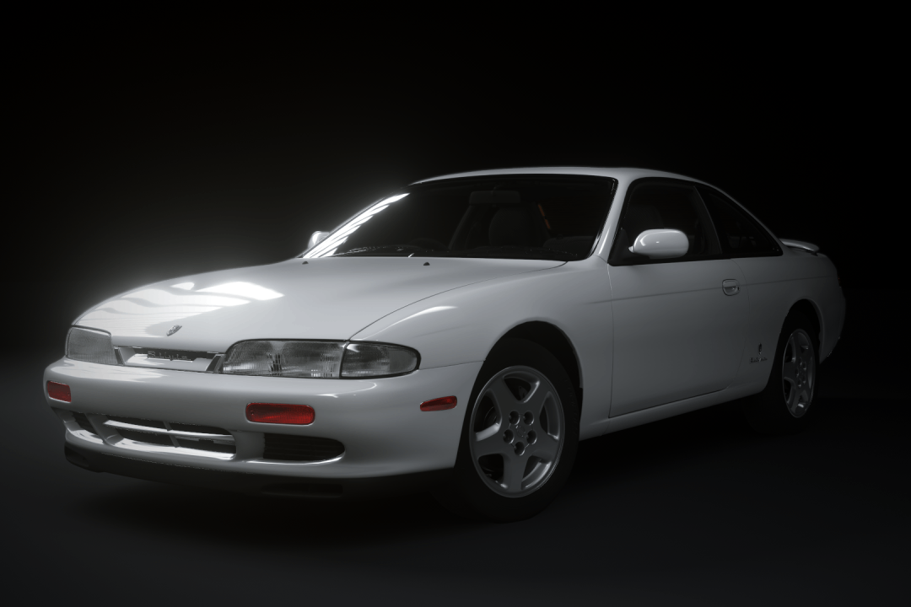
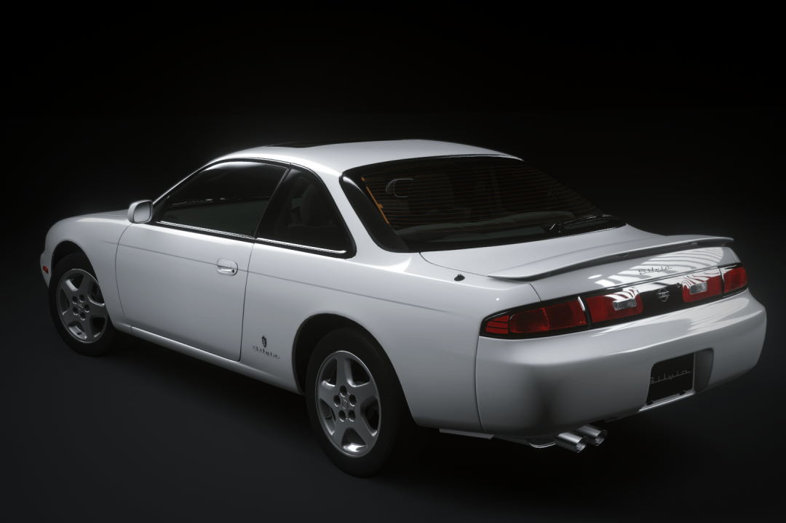
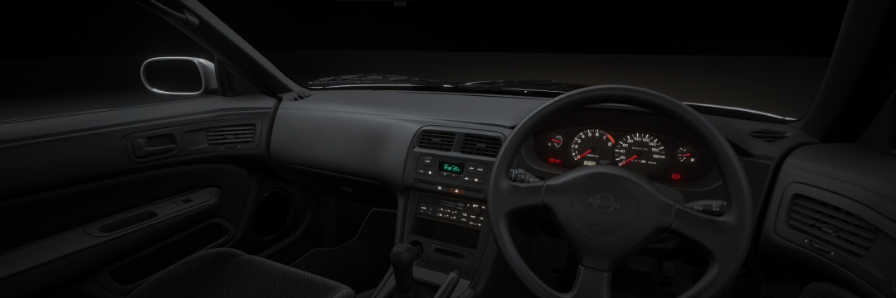
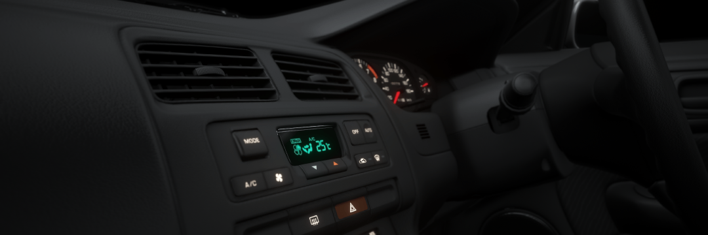

A 1994 Nissan Silvia K's Type S converted to Assetto Corsa from Gran Turismo 7.
Assetto Corsa-ready model has approx. 1.1 million polygons and 120 objects. Despite the high polycount, care has been taken to keep the object count small in order to ensure good performance. Most parts of the model have been subdivided 1x, with certain parts (generally the ones you most often look at) subdivided 2x, which gives it a superior appearance compared to competing mods.
This Silvia is powered by a turbocharged SR20DET engine producing a peak power of 220HP. Power is transferred through the 5-speed gearbox to a viscous rear limited-slip differential. The K's trim level 16 inch alloy wheels are wrapped in 205/55/R16 Bridgestone Potenza RE010 tyres.
Its suspension consists of a MacPherson strut front and a multilink rear end. Despite slightly softer spring rates than the outgoing S13 generation Silvia, which provide a more boaty and compliant ride, the car still offers the responsive and nimble handling S-chassis cars are known for.
K's Type S is the highest trim level - featuring 16 inch alloy wheels, a sunroof, trunk spoiler with stop light, turbocharged engine and automatic A/C. Factory option front lip is available on certain car liveries.
 The car uses a very accurate physics package developed by Arch (@archtarded on Discord). Sound is the work of TripledSevens, and some paintjobs are made by Akko (@kaizoshiro on Discord).
Download - (put link here when finished)
 Get me outta here!
Get me outta here!